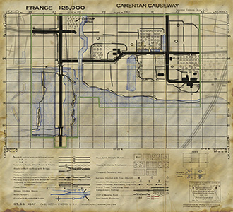

Date: June 9th, 1944
History:
Located 5 miles south of Carentan, the Causeway linking St Come Dumont and Carentan was of vital importance for the allied forces to acheive a break out from the Normandy beachhead.
In the end the fight for the Causeway killed many, many soldiers on both sides of the struggle. While leaving the way open for the Assault into Carentan itself and then deeper into France.
Objectives:
Cabbage Patch
Ingouf Farmhouse
Farmhouse 1
Farmhouse 2
FarmComplex House 1
Designed By: Ricky 'Sly Assassin' Williams